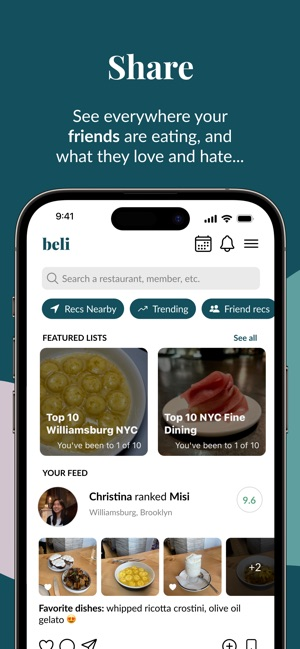

About Me
Hello! My name is Erica and I am in DS4200 with Professor Yang. I am a huge foodie and love exploring different cuisines and flavors across the world. Even beyond the food itself, I love the social aspect of sharing a meal with my friends and family.
While I was on my first co-op, some of the full-time analysts introduced me to a new app called Beli. It is a restaurant ranking and recommendation app for rating and discovering the best dining spots but also acts as a form of social media between friends.
In this website, you can learn more about me and some of my favorite restaurants I've been to!
